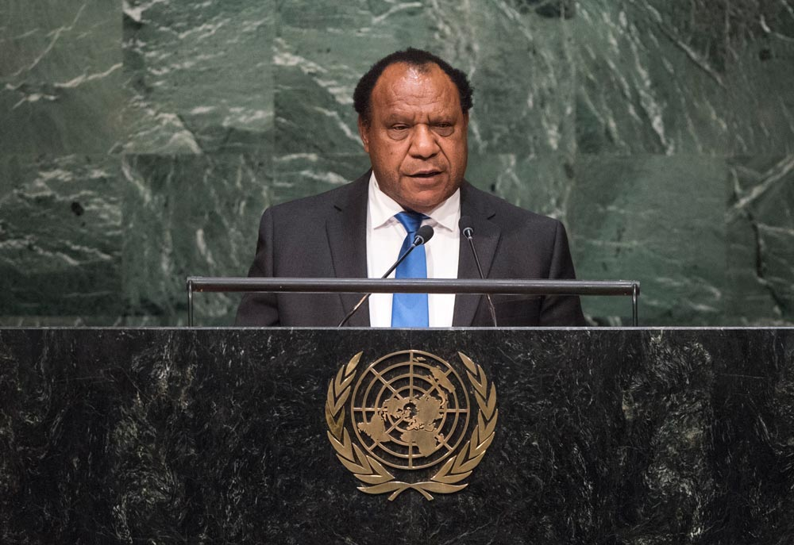

INTRODUCTION
The new O'Neill government faces a rapidly changing external environment as it struggles to manage a significant domestic economic downturn and unprecedented pressures on the national budget. Australia remains Papua New Guinea's closest foreign partner; by far its largest bilateral aid partner, trading partner and foreign investor, but its influence is diminishing as that of other actors is growing. China is an increasingly important player - as a trade partner, investor in infrastructure and source of foreign loans, as well as in the small to medium business sector. Relations with other Asian nations are expanding. Large foreign companies are exerting more influence on government policy than most nation state development and trade partners of Papua New Guinea can hope to exercise. These relationships are likely to come into sharper focus over the next year, as the PNG government prepares to host APEC in 2018. It is not clear that the new PNG government has the capacity to pursue the national interest abroad while it is preoccupied with a complex set of challenges at home.
HOW PAPUA NEW GUINEA INTERACTS WITH THE WORLD
The Pacific Islands region, once remote from the global centre of economic gravity, is now benefiting from its proximity to the centre of global growth that is China, East Asia, and India. The neglected and relatively poor Pacific Islands end of the Asia-Pacific region is increasingly attracting the attention of outside powers as its neighbourhood has grown wealthier. China's profile in the Pacific Islands has grown enormously. China's interests in Papua New Guinea have predominantly focused on trade and investment but in the last year Beijing has for the first time leveraged these interests to put public pressure on the PNG government and other governments in the region to support its actions in the South China Sea, signalling a shift in dynamics in its relations with the island states.
Papua New Guinea, the largest, most resource-rich and most populous state in the Pacific Islands region, has the potential to be the most influential player in the region. While it takes its responsibilities in the Pacific Islands region very seriously, Papua New Guinea has been more interested in recent years in improving relations with Asian countries, where there are more opportunities to expand trade and attract investment. A member of APEC as well as the Pacific Islands Forum, Papua New Guinea has longstanding trading relationships with key Asian economies China and Japan, and growing trade relations with other East Asian nations, including Indonesia with which it shares a land border. The shift of PNG's connectedness into Asia and away from Australia is exhibited in Figure 1.

Rimbink Pato, Minister for Foreign Affairs, Trade and Immigration of the Independent State of Papua New Guinea, addresses the general debate of the General Assembly's seventieth session. Photo: United Nations Photo (flickr)
As PNG's relations with Asian countries have been strengthening, it struggles to play a consistent leadership role within the Pacific Islands region. This is in part because Papua New Guinea lacks the financial capacity to support a more ambitious regional policy. The budget of the Department of Foreign Affairs and Trade has steadily declined since 2013 and there is no indication that more resources will be available to the Department in the near future. The Department's actual expenditure totalled PGK68million in 2015, down from PGK75million in 2013, and the appropriation for the Department in 2016 was reduced to PGK59.3million and in 2017 to PGK44million.
Papua New Guinea's 21 foreign missions appear to be struggling with reduced funding. The most obvious consequence of this was Papua New Guinea losing its right to vote at the United Nations in early 2017 after failing to pay its United Nations dues. Following media reporting of the issue, the PNG government eventually paid the outstanding sum of US$100 891 to regain its voting rights.
Papua New Guinea is also constrained by Fiji, which has traditionally played the role of regional leader and continues to seek to do so with some success, particularly in global advocacy on climate change. Fiji currently holds the Presidency of the COP23 UN negotiations on climate change. As Suva hosts the Pacific Islands Forum, the University of the South Pacific (the regional university) and other regional organisations, Fiji is often better able than Papua New Guinea to persuade the rest of the world that it represents the Pacific Islands region.
Papua New Guinea's foreign policy has been driven by Prime Minister Peter O'Neill. In the first few years of his prime ministership, Peter O'Neill was active in promoting Papua New Guinea to the world, impressing foreign leaders with his can-do leadership style and PNG's strong economic growth story. O'Neill worked particularly hard on improving relations with the Australia Government, and in turn it was prepared to work more closely with the O'Neill government than had been the case during the Howard-Somare years. While relations with Australia have been coloured by the Refugee Resettlement Arrangement since 2013, O'Neill has maintained close ties with successive Australian prime ministers. O'Neill also worked to improve PNG's relations with its nearest neighbour, Indonesia, hosting a visit by President Jokowi in May 2015 and expanding relations with several Southeast Asian states, including the Philippines and Thailand, in addition to seeking a more substantial relationship with China.
CHINA'S AMBITIONS IN PAPUA NEW GUINEA
The growth of China's interests and influence in the Pacific Islands is the biggest story of the decade in the region. In the past few years, China has become the region's second-largest trading partner and a significant investor. Although China delivers aid very differently from the region's traditional donors and mostly through loans rather than grants, Lowy Institute research shows that China could be the region's third most significant aid partner. It is a remarkable advance from the situation a decade ago when China's interests in Pacific Island states were largely motivated by its competition with Taiwan for diplomatic recognition and its aid contributions characterised as 'chequebook diplomacy'.
China's presence in the region has undergone a significant shift over the past decade. Beijing now competes with more established players such as Australia, New Zealand, and France for influence with Pacific Island governments. But while China's interests in Pacific Island states appear to be substantial, it is worth recognising that these interests are only a small element of the global story of China's rise. China is the world's leading exporter, is seeking to be a more relevant aid partner in the developing world, and is growing its portfolio of foreign investments. No Pacific Island country ranks in China's top 50 trading partners. Papua New Guinea is ranked 124 on the list of countries China exports to and 66 on the list of countries from which China imports goods.
Papua New Guinea's size and its resources sector make it China's most significant partner in the Pacific Islands region. China-PNG trade totalled some US$2.3 billion in 2016. This represents about a twelvefold increase since 2000. While PNG's trade with Australia is worth considerably more than its trade with China in 2016, China's trade prospects are on a growth trend and Australia's are declining. China's direct investments in Papua New Guinea totalled US$496 million in 2015. Chinese investment and the Chinese nationals who work in Papua New Guinea on Chinese projects tend to attract much attention but the value of these projects is not about to overtake the value of individual investments of major resources companies or Australian foreign direct investment.
According to Lowy Institute research, China's aid to Papua New Guinea since 2006 totals approximately US$632 million. This pales into insignificance if compared with cumulative Australian aid to Papua New Guinea over the same period (in excess of US$3.4 billion). However, the majority of China's aid is delivered through loans, so cannot be directly compared to aid delivered by other partners. Chinese aid includes projects in vocational training, communications, fisheries, agricultural technical cooperation, and infrastructure such as a military hospital upgrade, university dormitories and roads. China has a patchy record of aid project implementation in Papua New Guinea, with some projects such as university dormitories praised for their high quality and other promised infrastructure not ever delivered.
Beyond its trade, investment and aid links, China has a diaspora, both old and new, in Papua New Guinea, which has helped to expand its influence. It has also invested in soft power, including in television broadcasting and in scholarships, which signals its interest in building a long-term relationship with the people of Papua New Guinea.
Chinese aid, trade and investment has traditionally been perceived in Papua New Guinea to come with 'no strings attached' but that assumption has been challenged in the past two years. While China has made more loans available to Pacific Island countries, Papua New Guinea has not rushed to take these up, cautious about the debt obligations that will follow. Prime Minister Peter O'Neill visited Beijing in July 2016, during a period where Chinese diplomats had been putting pressure on Pacific Island states to support its position in the South China Sea. For the first time, O'Neill agreed to respect China's position and agreed to the issue of a joint press release that asserted China's "legitimate and lawful rights and interest in the South China Sea, and its right to independently choose the means of dispute settlement in accordance with law". Although O'Neill clarified that Papua New Guinea thought maritime disputes should be resolved under international law, his apparent bowing to China's pressure on this key strategic dilemma for the Asia-Pacific was a departure from PNG's longstanding tradition of avoiding involvement in great power debates or aligning with Australia and other Western powers.
China's willingness to put public rather than private pressure on Papua New Guinea to align itself with its position on such a critical strategic issue suggests that it is no longer content with its image as a generous and altruistic partner and will be making more public calls on Papua New Guinea for support for United Nations votes or in other regional disputes. A more demanding China could create difficulties for PNG's ambitions to strengthen its relations with other East Asian states.
WHAT IS DRIVING THE INTERESTS OF OTHER NEW PLAYERS?
Growing trade ties between Papua New Guinea and East Asian states beyond China often go largely unnoticed in debate about PNG's international profile. According to IMF data from 2016, Asian states comprise seven of PNG's top ten trading partners, with Singapore second, China third, Japan fourth, Taiwan sixth, Malaysia seventh, India eighth, and Thailand tenth.
Despite these poor educational outcomes, public expenditure on education is not low by international standards and compares relatively well against other countries in the region, averaging around 5 per cent of GDP and 15 per cent of the national budget. Distribution of these resources remains a critical issue, as does the proportion absorbed by wages and administration. Technical and vocational education and training (TVET) have also been badly under-resourced for decades even though many students, particularly males, seek greater emphasis on practical work skills during school years.
With the $19 billion PNG LNG project coming on line in May 2014 PNG's exporting landscape has dramatically changed, with Japan, Taiwan, and China competing with Australia as primary exporting markets for Papua New Guinea.
Figure 1: PNG's rapidly changing trade portfolio
Source: UN COMTRADE database (Taiwan not included)
With Asian countries such as China, Singapore, and the Philippines offering more opportunities for education, training, trade, and technical cooperation, PNG's attention is increasingly directed to Asia. Asian businesses, large and small, have been setting up in Papua New Guinea in recent years and helping to strengthen ties with Asia. Increasing numbers of workers from Asian countries have been coming to Papua New Guinea for employment over the past five years, with Philippines, India, China, and Malaysia the main source countries. PNG students have been increasingly seeking out education in the Philippines as it is cheaper than Australia and has the advantage of English-language instruction and direct flights. In turn, the Philippines has become the second-largest source of foreign workers for Papua New Guinea.
While PNG's trade relationships with East Asian countries are growing, the interests of these countries in Papua New Guinea are as yet largely limited to trade, investment, and employment. There are opportunities to strengthen technical cooperation and education links that could be of significant benefit to Papua New Guineans but these sorts of ties are only in the very early stages of development.
INFLUENCE OF NON-STATE EXTERNAL ACTORS
The resource-dependent nature of PNG's economy means that major resources companies wield influence in Papua New Guinea exceeding that of nation state partners. This influence matters because the actions of major resources and logging companies play a critical role in determining the trajectory of the PNG economy. The direction of PNG's exports and the development of future investment potential are largely determined by a select group of major foreign investors in Papua New Guinea which helps to guide the government's foreign and trade policy priorities. This gives multinational and foreign companies strategic significance in Papua New Guinea that deserves greater recognition.
In addition to their extraction activities, resources and logging companies fulfil a role that in most nations would be more properly assumed by the state, for example building infrastructure, and delivering health and education services in the communities in which they operate. Foreign investors in Papua New Guinea are expected to deliver on social development outcomes in the rural areas in which they operate as part of the agreement they make with government when they invest. This has been the case with a number of major companies, including Oil Search, Ok Tedi, Steamships, Rimbunan Hijau and, latterly, ExxonMobil. The size of their investment and the contribution multinationals make to national development priorities makes it difficult for the PNG Government to resist their influence.
While many multinational or foreign companies in the resources, logging, and finance sectors wield influence in Papua New Guinea, the size and scope of US multinational ExxonMobil's investment gives it a dominant position in the country. ExxonMobil's initial investment in PNG LNG exceeds US$19 billion. Its operations, which commenced in 2014, include gas production and processing facilities, onshore and offshore pipelines, and liquefaction facilities.
ExxonMobil ships liquefied natural gas from Papua New Guinea to customers in Asia. In 2016 ExxonMobil produced 7.9 million tonnes of LNG - an increase of 14 per cent from the original design specification of 6.9 million tonnes per annum. The company employs 2500 people, 80 per cent of whom are Papua New Guinean nationals. In the rural communities in which it operates, ExxonMobil has invested more than PGK800 million (US$247 million) on building infrastructure and developing social programs focusing on education, health and environment, women's economic empowerment, and agriculture. The company also invests to improve access to education and in a community health program in its project areas.
The size of Exxon's investment in Papua New Guinea exceeds the current size of the stock of Australian foreign direct investment in the country. Combined with the representation of exports from Exxon's operations in PNG's annual exports, Exxon could be considered a more significant economic and strategic player in Papua New Guinea than Australia. It already is clearly more important to Papua New Guinea than any one Asian nation, including China. Exxon's influence is evident not only through the close relationship it has to have with the PNG Government and its contribution to the direction of trade, but also through its ability to determine confidence in the PNG economy and to inspire or dissuade other new investments in Papua New Guinea.
Corporate influence on government is by its very nature opaque, is exercised during private meetings, and usually excludes the public. Managing the diverse range of demands and advice from corporate players is challenging for PNG ministers and officials. But the PNG Government could do more to ensure that the influence of foreign investors delivers results for the people, not financial returns for individual decision-makers.
LIKELY IMPACT OF PNG'S HOSTING OF THE APEC SUMMIT IN 2018
Hosting the APEC Leaders' Meeting offers a unique opportunity for the government and business community of Papua New Guinea to market the potential of the nation to other APEC nations. It will be the first time Papua New Guinea hosts a summit of this size and significance and the first time it will host international media beyond the region.
If leveraged to its maximum benefit by the PNG Government, successfully hosting the summit could assist in raising PNG's profile in the APEC region and improve awareness of PNG's economic potential. But if it is poorly managed, PNG's hosting of the summit is more likely to reinforce the image of Papua New Guinea as an outlier in APEC and worse, raise doubts about its reliability as a trade and investment partner.
It is already clear that Papua New Guinea cannot afford to host the APEC Leaders' Meeting in 2018. Backing out of its commitment is highly unlikely at this stage. Public criticism is likely to persist, given that budgets for essential government services are under huge pressure and already being diverted to pay for an event that provides no immediate direct benefit for the population.
The Australian Government is contributing approximately one-third of the costs of hosting the Leaders' Meeting. Papua New Guinea has reportedly budgeted PGK800 million (A$330 million) for the APEC summit. This does not include the construction of the purpose-built APEC Haus convention centre, which is being constructed by LNG producer Oil Search through a tax-credit scheme.
Papua New Guinea has form on poor budgeting for events. Its expenditure on hosting the Pacific Games in 2015 came under considerable domestic criticism. Many of the venues were unfinished or only just finished when the Games began. But more worryingly, the government cut budgets for essential services to ensure construction of Games venues was finished. This pattern has been repeated, with health and education budgets said to be taking a hit that they cannot afford and which will cause suffering in the rural population.
The PNG Government will need to work harder to persuade the population that there are long-term benefits to the nation in using this event to enhance its links with Asian partners and build international interest in Papua New Guinea. Working closely with the business community in this task, as the O'Neill government is doing, should help but more transparency is also needed.
PROSPECTS FOR IMPROVING THE AUSTRALIA-PNG BILATERAL RELATIONSHIP
Australia's relationship with Papua New Guinea appears to be strong on the surface. Australia's High Commission in Port Moresby is one of the largest Australian diplomatic missions in the world and has more attachéd agencies than any other mission, demonstrating the breadth of Australian Government engagement with Papua New Guinea. A bilateral Papua New Guinea Ministerial Forum is convened on an annual basis. There are numerous bilateral agreements supporting the relationship. Trade, investment, defence, and aid ties are strong and enduring. Australia enjoys a dominance in the delivery of aid to Papua New Guinea that is almost unheard of in international development (see Figure 2). Australia's Department of Foreign Affairs and Trade describes the bilateral relationship as an "economic and strategic partnership".
Figure 2: Aid flows to Papua New Guinea
Source: OECD QWIDS database (Note: Does not include China)
In the 2016 Australian Defence White Paper a high priority was placed on Australia's defence relationship with Papua New Guinea. The White Paper committed to "increase [its] cooperation with the Papua New Guinea Defence Force and Department of Defence in the decade ahead". After a secure Australia, the White Paper identifies Australia's second strategic interest as a secure nearer region including Papua New Guinea and says Australia will continue to be PNG's principal security partner. The White Paper also asserts that "geographical proximity means the security, stability and cohesion of Papua New Guinea contributes to a secure, resilient Australia with secure northern approaches". Despite weaknesses in the capacity of PNG's security forces, the Australia-PNG defence relationship is a strong one and has potential for growth.
Australian investment in Papua New Guinea totalled almost A$18 billion in 2016, of which A$15.8 billion was foreign direct investment. Bilateral merchandise trade was worth A$5.3 billion in 2016. According to data collected by DFAT, Australia was PNG's largest source of imports and second-largest export destination in 2015.
Australia will spend approximately $546 million in official development assistance or "aid" to Papua New Guinea in 2017-18. This is almost $200 million more than Australia will spend on aid to Indonesia, the second-largest recipient of Australian aid over the same period. Australia's complex aid program supports three broad objectives: promoting effective governance, enabling economic growth and enhancing human development. Although the PNG economy is not aid-dependent, Australian aid is still in high demand.
With strong pillars holding up the bilateral relationship, the future of the relationship under the new O'Neill government has good potential. But there are fissures in the relationship. The Refugee Resettlement Agreement signed by Prime Ministers Kevin Rudd and Peter O'Neill changed the balance of power in the bilateral relationship. Canberra's dependence on O'Neill to continue to detain asylum seekers and ensure they never entered Australia gave the PNG Prime Minister confidence to dictate terms in the relationship and made it impossible for Australian ministers and officials to say or do anything about allegations of corruption against the O'Neill government. And until the fate of asylum seekers on Manus is certain, the issue will remain a barrier to genuinely improving the bilateral relationship. Limited public awareness of Papua New Guinea in Australia and the tiny size of the PNG diaspora in Australia means there is not a strong lobby group to push Canberra to improve relations.
However, even if relations can be improved under a new government, there are likely always to be tensions. Australia's colonial legacy and the contemporary breadth of coverage of Australia's aid program means the Australian Government will likely remain a convenient whipping boy, rightly or wrongly, when things go wrong in Papua New Guinea. The difficulties Papua New Guineans have in obtaining visas to visit Australia are highly unlikely to be addressed during the term of the next PNG Government and will continue to be an irritant in the bilateral relationship.
CHALLENGES FOR A NEW PNG GOVERNMENT IN MANAGING GROWING INTERESTS OF EXISTING AND NEW PLAYERS
The new O'Neill government faces very different challenges following this election to those it faced following the 2012 elections. The fast-declining national economy, combined with major failings in funding essential service delivery - particularly in health - creates a sense of urgency for action. Allegations of corruption against O'Neill himself have yet to be addressed in court and will remain a festering sore on the Prime Minister's leadership. The rural majority has found ways around the elections to protest its frustration with the government's failings to deliver even basic development and is likely to continue to voice concerns, especially as there is little chance things will improve. The business community continues to protest restrictions on foreign exchange, which appear to have no resolution. The short-term outlook for the country is decidedly negative.
The government will be tempted to look for quick funding fixes. Seeking new loan arrangements from the multilateral banks or even from China could be on the agenda. Another approach to Australia for budget support is also likely. The government will continue to seek private sector support for building infrastructure and for service delivery.
The government will need to focus on attracting new investment in resources at a time when global prices for PNG's resources are low. With a crisis in health funding forcing serious cutbacks in hospital and other critical health services, the role of the private sector in assisting the government to deliver health services to the communities in which they operate will become even more pronounced.
Readying Port Moresby to host the APEC meetings in 2018 will be an immediate priority. Cost over-runs are likely, even with Australian support.
Despite its financial problems, the good work the PNG Government has done in expanding relations with Asian states in recent years means there are opportunities to deepen trade and investment ties with the stronger economies of East Asia and with India.
Managing Beijing's expectations provides its own challenges. China is likely to exert pressure on a weak Papua New Guinea to again support its questionable international actions in the South China Sea. Australia has concerns about China's growing influence in the region and in Papua New Guinea, which may create new tensions in the Australia-PNG relationship if Australia seeks to put the brakes on China's capacity to influence the PNG Government. Other East Asian nations, particularly Japan, are also concerned about how China exerts its influence in the region. Papua New Guinea will need to ensure it is maintaining friendly relations with all its partners and avoid being drawn into disputes.
Papua New Guinea does not have sufficient resources right now to expend on enhancing its diplomatic profile in Asia. It should focus on strengthening trade and investment ties and encouraging technical cooperation and education links which will provide more opportunities to its population. To this end, the PNG Government would benefit from seeking to facilitate more development cooperation between China and other bilateral partners to help the people of Papua New Guinea. This would make it clear to China that its domestic development takes priority over any involvement in international disputes and enable Papua New Guinea to better determine its own foreign policy.
conclusion
Managing a range of existing and evolving foreign interests will be difficult for a financially constrained O'Neill government that is rightly preoccupied with more important domestic challenges. But for all the difficulties, there are also opportunities. Hosting the APEC Summit in 2018 will bring a concentration of international attention to Papua New Guinea's potential that would otherwise take years to attract. Much good preparatory work to strengthen relations with Asia has already been done. Papua New Guinea maintains the respect of other Pacific Island countries and could seek to lead on regional issues where Fiji cannot. Papua New Guinea's economic fortunes are suffering now but there are good long-term prospects being recognised by international investors. Continued growth in trade and investment links with China can assist in spurring economic growth in Papua New Guinea. Australia will remain Papua New Guinea's closest partner, friend, and protector but there is work to be done on both sides to improve the bilateral relationship and deliver better dividends from Australia's commitment to Papua New Guineans.
ABOUT THE AUTHOR
Jenny Hayward-Jones is a Lowy Institute Nonresident Fellow and former Director of the Melanesia Program at the Lowy Institute from its inception until early 2016. Prior to joining the Lowy Institute, Jenny was an officer in the Department of Foreign Affairs and Trade for thirteen years, serving in the Australian missions in Vanuatu and Turkey. She worked as Policy Adviser to the Special Coordinator of the Regional Assistance Mission to Solomon Islands from its inception in July 2003 and in 2004. She is the author of two Policy Briefs on Fiji and several reports from major conferences on regional issues, on Papua New Guinea and on Solomon Islands that she has convened in Australia, New Zealand and Solomon Islands.
These papers presenting a country snapshot of Papua New Guinea in 2017 were produced with the support of ExxonMobil. More